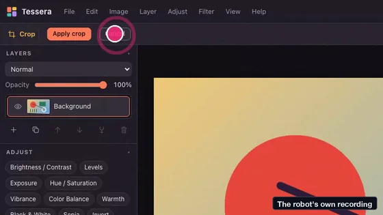

I asked Claude Code for Photoshop. Then a robot clicked every button.
Ep 07 · Photo editor
One prompt asked for a browser photo editor, and about 25 minutes later Claude Code had built Tessera, with layers, filters, text and undo. A test program clicked all 281 controls and flagged 64 as doing nothing. Tried again the way a person uses them, all 64 work: the mistakes were the checker's. Not affiliated with Adobe.